0'to 1'
01
Bathroom tubs & showers
The valve, spout and drain behind a tub or shower. You need it when a tub is being replaced, a bathroom is being redone or a shower has stopped running the way it should.
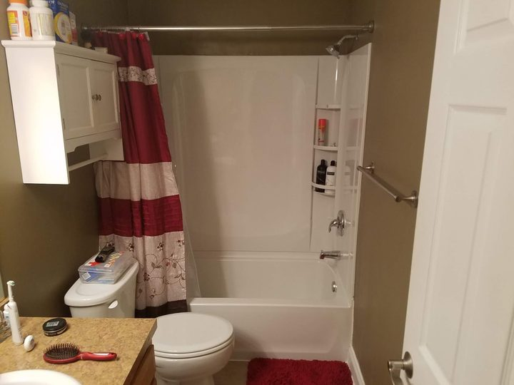
Medina, Ohio 44256
From the trench in the yard to the tub in the bathroom.
Plumbing in Medina, Ohio: sewer and water line digs below grade, then bathroom tubs and showers, sinks, fixtures and commercial sinks above it. The page digs down and comes back up the same way.
4.6 stars on Google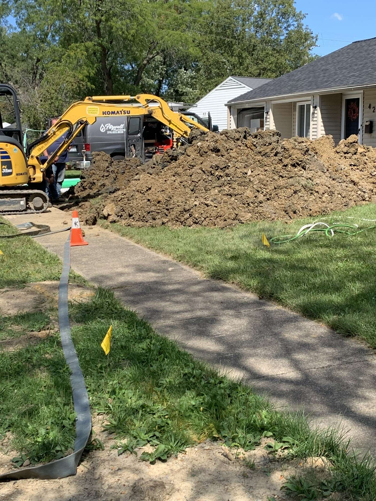
Stratum 01 · Clay · Services
What their own photos show, read like a boring log: from the bathroom you use every day, down to the sewer and water lines under the lawn.
01
The valve, spout and drain behind a tub or shower. You need it when a tub is being replaced, a bathroom is being redone or a shower has stopped running the way it should.

02
Bathroom and kitchen sinks, faucets and the drains under them. You need it when a sink is being swapped, a faucet has run its course or a new vanity is going in.
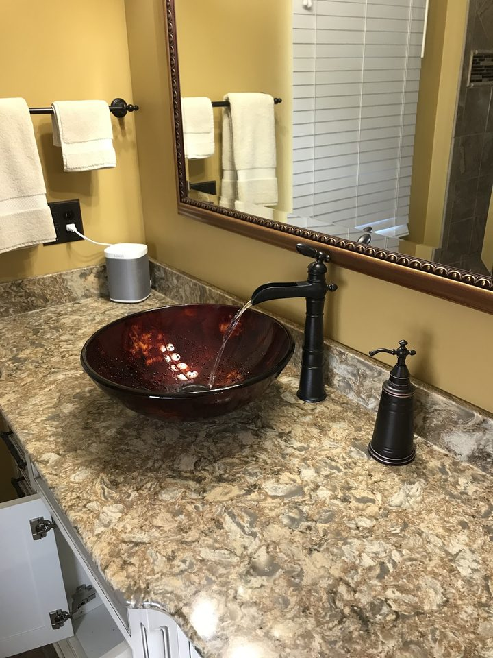
03
Shower valves, heads and hand showers set into tiled walls. You need it when a shower is being built or rebuilt and the fixtures have to line up with the tile.
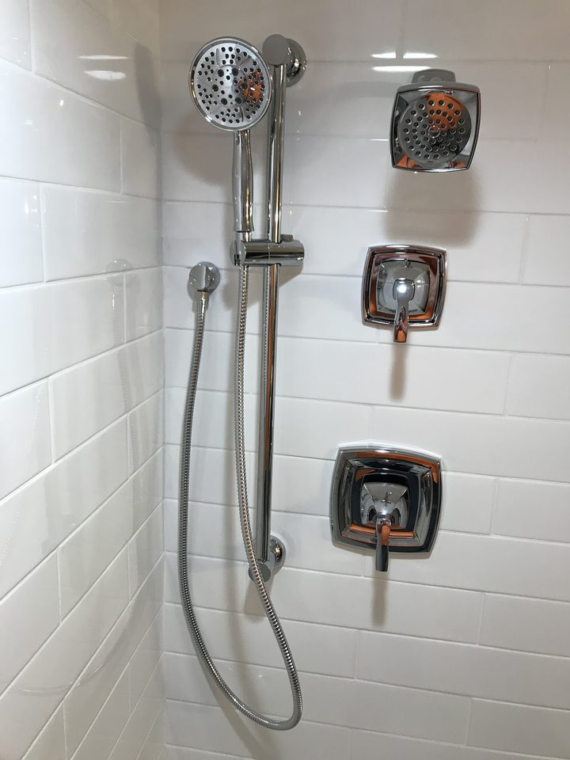
04
Multi-bay stainless sinks with a spray rinse and floor drain, for kitchens and workrooms. You need it when a commercial space is being fitted out or a sink line is being added.
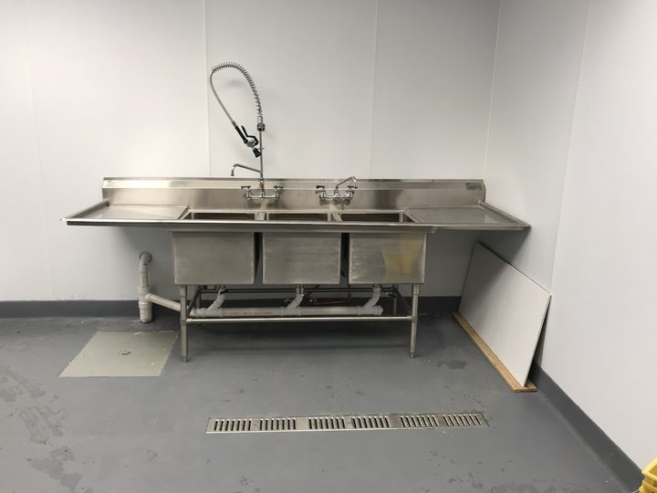
05
Digging across the yard to reach a sewer or water line, then backfilling. You need it when the problem is under the lawn, the drive or the path and cannot be fixed from inside the house.
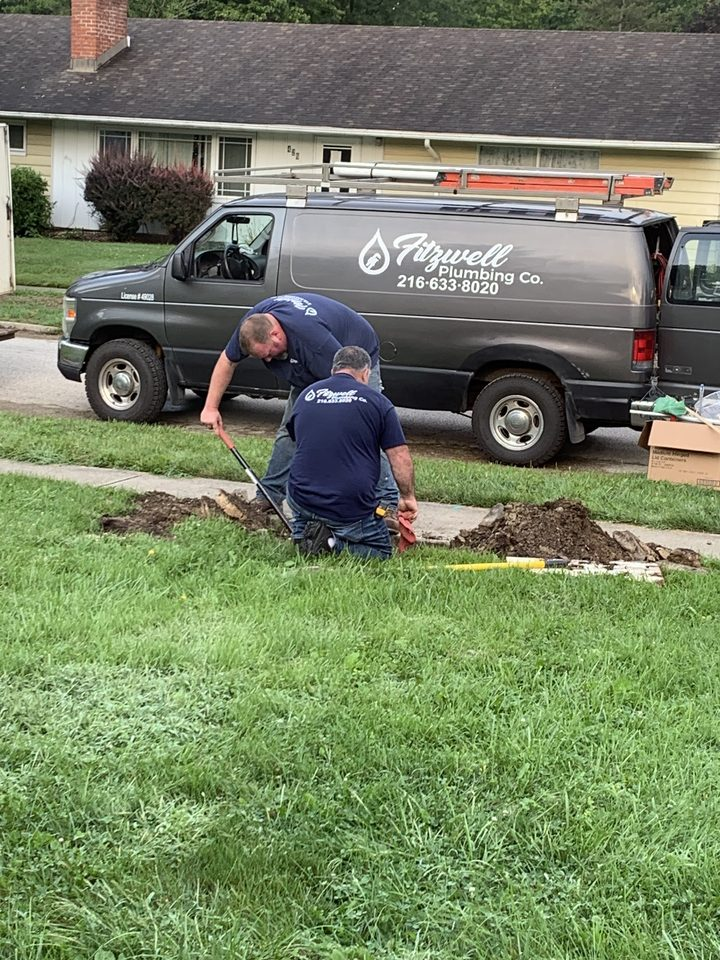
Stratum 02 · The cut · Sewer & water lines
Sewer and water lines live under grass and soil. Getting to one means opening the ground, working in the cut, then closing it again. This is one of their own jobs, labelled.
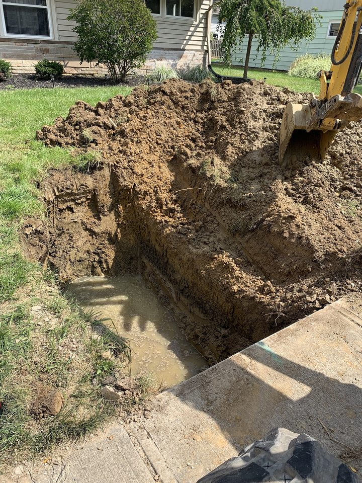
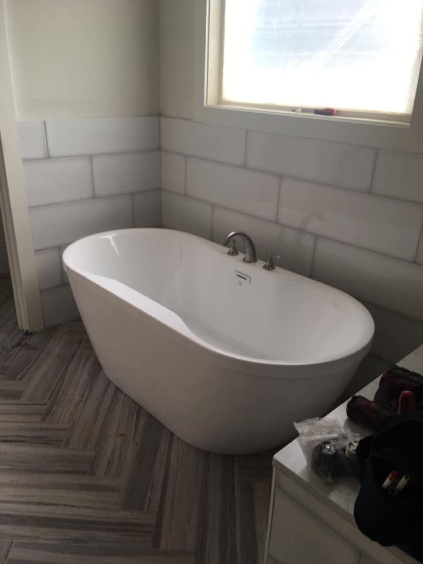
Stratum 03 · Silt · Before you call
Three quick checks anyone can do. They help you describe the problem; they do not replace a plumber. Tap each step.
If only one fixture is slow, the trouble is usually in that fixture's own drain or trap, not the main line.
Run another tap or flush a toilet. If several fixtures react at once, the shared line is the more likely cause.
Look at the basement floor drain or the lowest tub. Water there points to the main line. Stop using water and call a plumber.
Still not sure? Stop using water and call or text a photo to (216) 633-8020.
Stratum 04 · Gravel · Back above grade
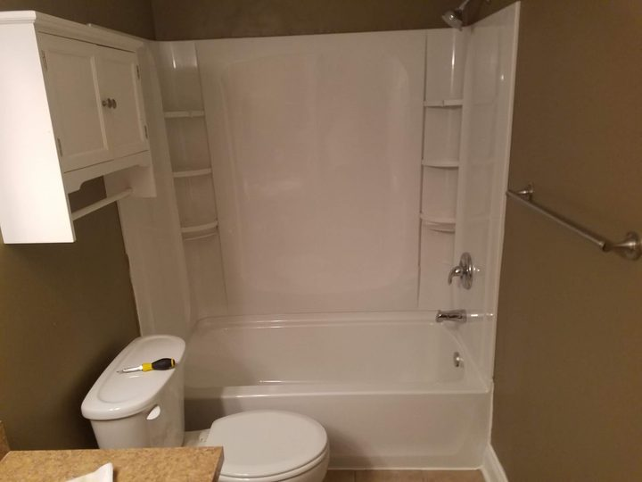
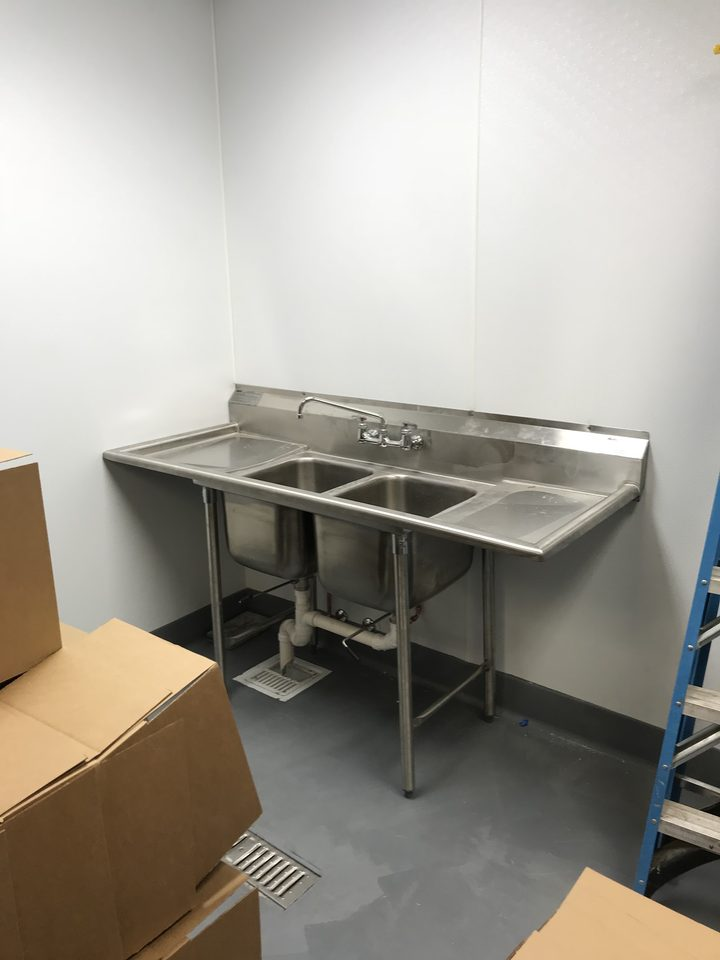
Under the lawn.
Inside the house.
Based on the photos they have shared.
Stratum 05 · Bedding · Before anyone digs
Before a dig in Ohio, the call goes to 811 and the utilities come out to mark their lines on the lawn. Every colour means something. Here is the code you will see in the grass.
The colours follow the uniform colour code used for utility locates across the US.
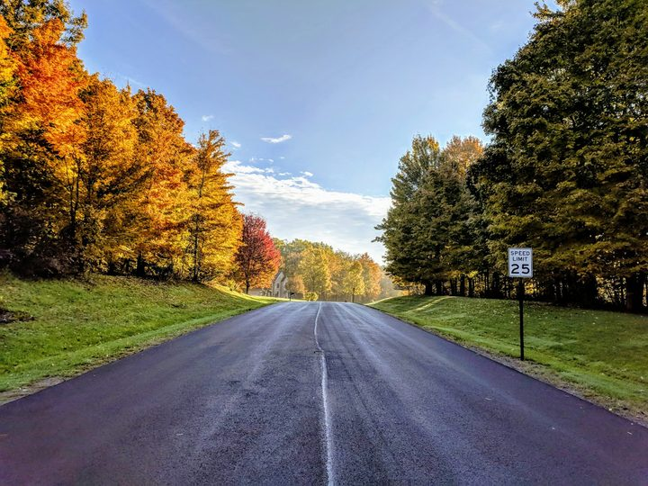
Stratum 06 · Water table · Where they work
Fitzwell Plumbing is based in Medina, Ohio 44256.
Call (216) 633-8020Usually where the water line enters the house, often in the basement near the front wall or beside the water meter. Find it before you need it, and turn it off if a pipe is leaking, then call a plumber.
811, the national call-before-you-dig line. The utilities mark their buried lines with paint and flags, free of charge to you, so nobody digs into a gas, power or water line by mistake.
What is happening, where in the house or yard, roughly how long it has been going on, and the best number to reach you. A photo helps: you can text one to (216) 633-8020.
Stratum 08 · Mark it out